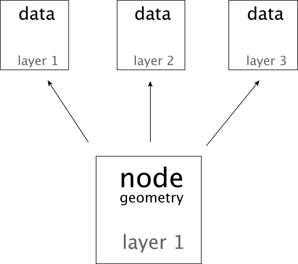
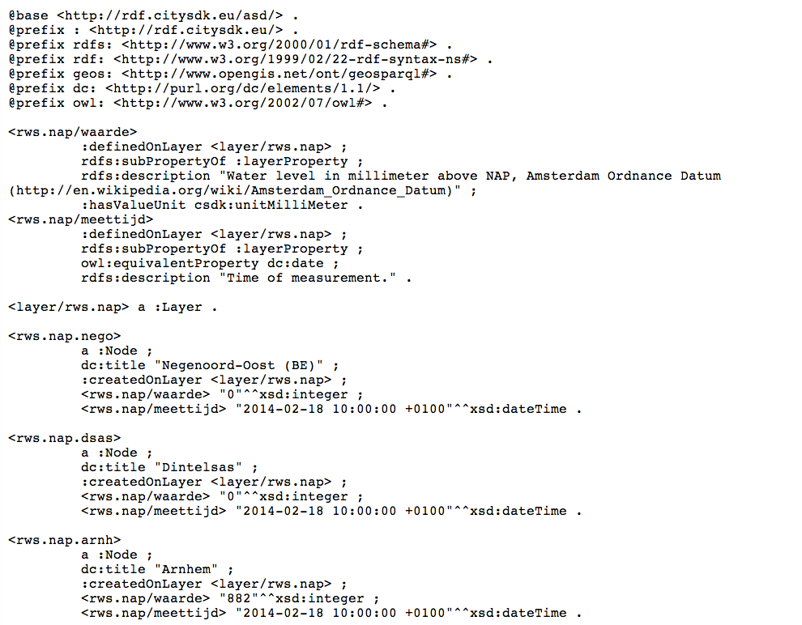
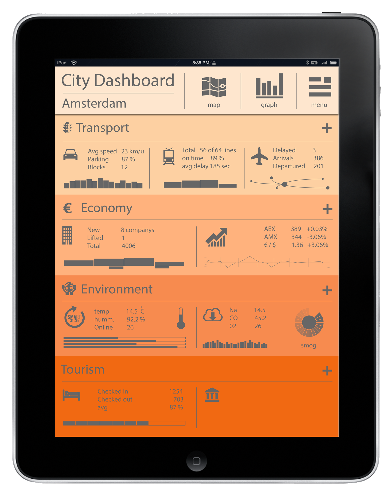
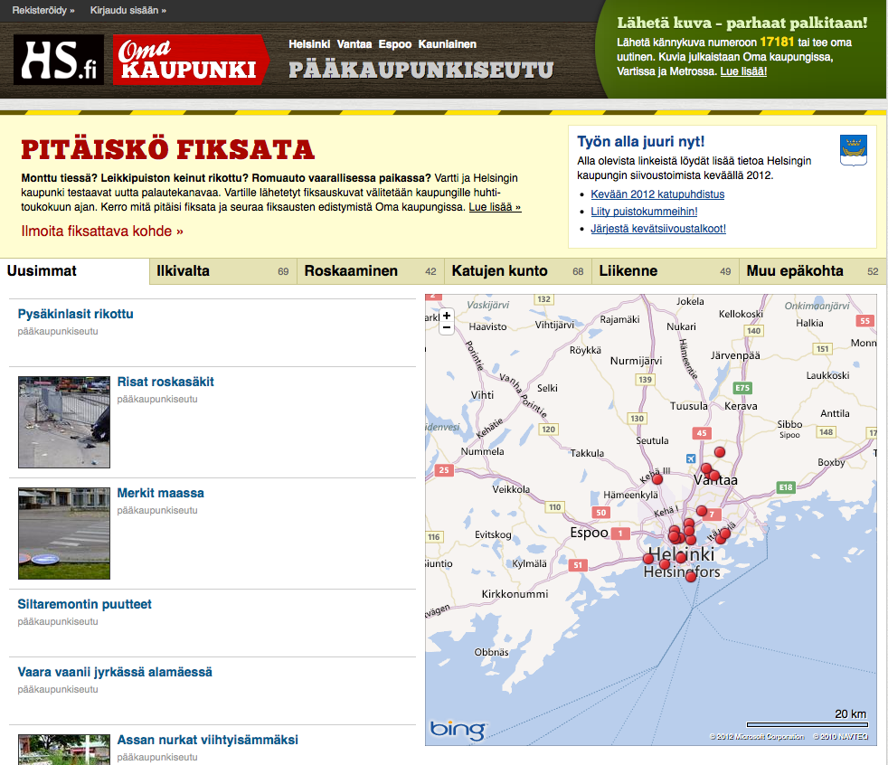
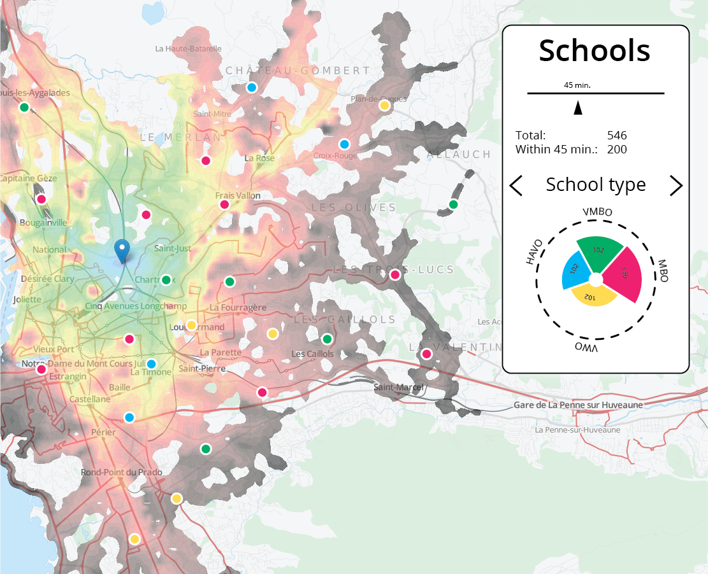
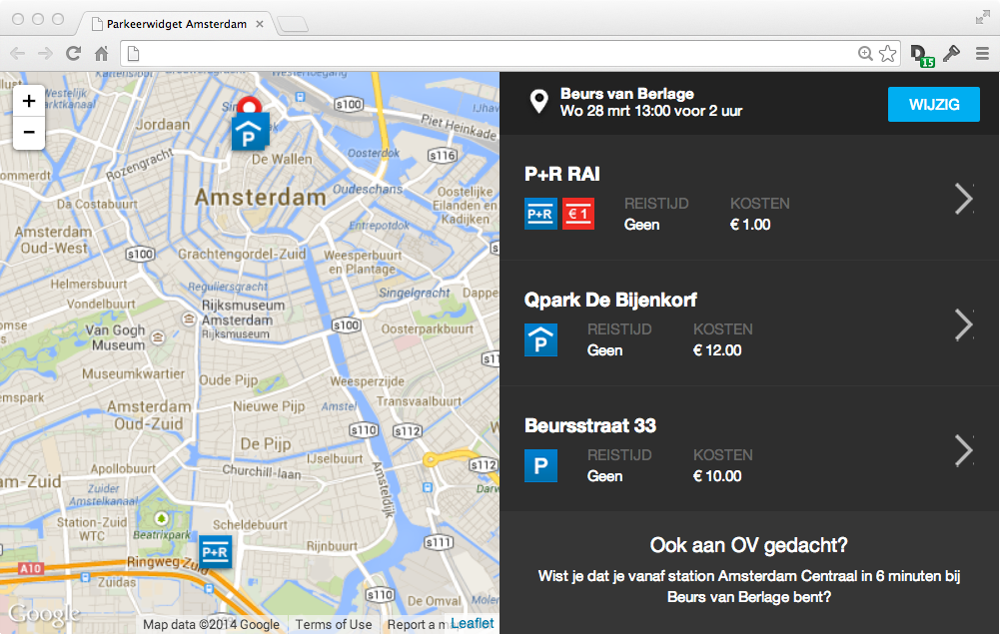

CitySDK
Linked Data API
Rutger van Willigen
●
Waag Society
CitySDK
City Service Development Kit
Expose data through one unified REST API

Data comes from different sources, in different formats
CitySDK
Linked Data API
Data from different sources
One unified REST API
CitySDK data model
API for a read/write city

Output:
JSON, RDF/Turtle
RDF/Turtle example
HTTP API
GET/PUT requests to add or modify nodes and data
Developer's site
Includes API documentation
CMS
Add layers, add data
Ruby gem
gem install citysdkWrite data to existing node
require 'citysdk'
email = ARGV[1]
password = ARGV[2]
api = CitySDK::API.new("apicitysdk.ibb.gov.tr")
api.authenticate(email, passw)
data = {
data: {
:type => "43",
:date => "2013-11-01",
:from => "gtfs.stop.istb.91",
:to => "gtfs.stop.istb.87"
}
}
@api.put("gtfs.line.2.t1-0/hackathonist.team1.construction", data)
Create new node(s)
Use bulk API: http://devcitysdk.ibb.gov.tr/write
Sample applications
Buildings
by year of construction
dev.citysdk.waag.org/buildings
City Dashboard
Open311
OpenTripPlanner
Parking Widget
Waag Society's Challenge:
●
Write new, linked data!
- Find, scrape, get new data
- Add this data to existing nodes or create new nodes
- Enrich existing nodes with new layers
- Crowd-sourced data through app
Or work out an app concept!
Accounts
Each team is assigned a team number
and a layer to write to
nr = 1
email = "team#{nr}@hackathonist.com"
password = "Team#{nr}.hackathonist"
# team1@hackathonist.com
# Team1.hackathonist
Data Addition Award
for the best new
concept or implementation
- CitySDK trophy
- 5 Raspberry Pi systems
CitySDK Istanbul
API endpoint - apicitysdk.ibb.gov.tr
Thanks!
rutgervanwilligen.nl/presentations/hackathonist